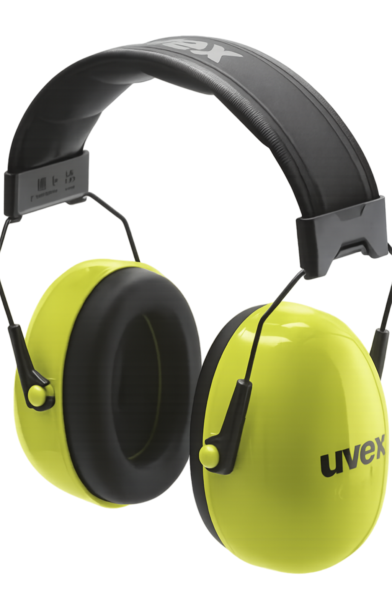

Protecting miners’ ears from noise hazards
Далд уурхай дахь дуу чимээнээс уурхайчдын сонсголыг хамгаална

Hearing protection is vital for underground miners, shielding them from continuous exposure to loud machinery, drilling, and blasting noise.
Without proper protection, miners risk permanent hearing loss and other auditory health issues.
Далд уурхайн ажилчдын хувьд сонсгол хамгаалах хэрэгсэл нь өрмийн машин, тэсэлгээний дуу чимээ зэрэг чанга, байнгын давтамж бүхий чимээнээс хамгаалах чухал хэрэгсэл юм.
Зөв хамгаалалтгүй бол уурхайчид сонсголоо бүрмөсөн алдах буюу сонсголын эрүүл мэндийн асуудалд өртөх эрсдэлтэй.
Reduces harmful noise levels from machinery.
Машин төхөөрөмжөөс гарах сонсголд хортой дуу чимээг бууруулна.
Designed for long shifts underground.
Далд уурхайд удаан хугацаанд хэрэглэхэд тохиромжтой.
Resistant to dust and moisture.
Тоос, чийгэнд тэсвэртэй.
Meets international safety standards.
Олон улсын аюулгүй ажиллагааны стандартыг хангасан.
1. What is the main purpose of hearing protection?
To reduce harmful noise exposure
To improve vision
To protect lungs
2. What health risk does hearing protection help prevent?
Respiratory diseases
Permanent hearing loss
Broken bones
3. Why is comfort important in hearing protection?
Ensures miners wear it consistently
Makes it waterproof
Improves brightness underground